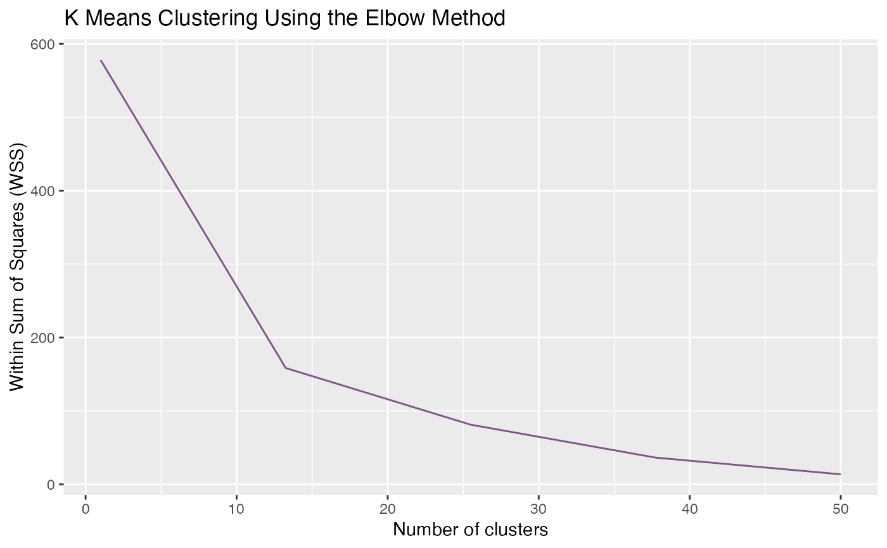

gClusters
gClusters.RdgClusters returns the clusters generated by k-means and yield an elbow plot as a way of finding the optimal parameter.
Arguments
- data
A data frame generated by gData().
- ncluster
A number of clusters.
- elbow.max
A number of the maximum value of x-axis. It should be larger than the expected
nclusterand smaller than the sample size.- iter.max
A number of the maximum iterations allowed in k-means.
- nstart
A number of random attempts of generating initial configurations. The k-means algorithm will choose the best one among these attempts. For larger data, 'nstart' can be set lower or just set to 1.
Details
This function could be ran without any parameters except data at the very beginning. After that, users are expected to tune the values according to the clusters and elbow plot.
To determine the optimal number of ncluster, select the value at where the graph has a rapid change. You may also increase the elbow.max if the data is very large or complicated.
Examples
data(FuncExample)
head(a)
#> ID Day_1 Day_2 Day_3 Day_4 Day_5
#> 105494 grp1_123656 1.16324449 1.363903662 1.3037049 0.70082791 0.2386620
#> 101572 grp1_118996 2.22195307 0.921244789 -0.6520548 -0.47274459 0.7920261
#> 122928 grp1_144232 2.21925785 -1.355860458 -0.5660429 -0.09238685 0.5524392
#> 65357 grp1_76657 1.66012361 -0.199676781 -0.9443640 0.39394648 1.6731019
#> 112264 grp1_131716 -1.93475260 -1.747281361 -0.5416194 0.06701984 0.5028177
#> 49395 grp1_58305 0.07723733 -0.003775164 1.6222273 -1.35291009 -1.2707773
#> Day_6 Day_7 Day_8 Day_9 Day_10 Day_11
#> 105494 -0.51320765 -0.4941146 -1.1619763 -1.0444529 -1.2134812 -0.34311029
#> 101572 -1.26690762 -0.4369331 0.2967952 -0.3799502 -0.9511152 -0.07231373
#> 122928 0.16510415 0.8255533 -0.8108334 0.0613068 0.1064795 -1.10501724
#> 65357 -0.09385111 0.1260783 -0.2575994 -0.1881348 -0.4223389 -1.74728521
#> 112264 0.63638291 0.8979775 0.7072291 0.8780265 0.1489132 0.38528667
#> 49395 0.14045162 0.3075112 0.2880033 0.7235652 -1.5017100 0.97017677
#> type
#> 105494 Peptide
#> 101572 Peptide
#> 122928 Peptide
#> 65357 Peptide
#> 112264 Peptide
#> 49395 Peptide
reslist <- gClusters(a)
# k-means result
reslist[[1]]
#> K-means clustering with 20 clusters of sizes 4, 4, 4, 2, 1, 4, 2, 2, 3, 4, 4, 5, 2, 3, 1, 6, 4, 2, 2, 1
#>
#> Cluster means:
#> Day_1 Day_2 Day_3 Day_4 Day_5 Day_6
#> 1 -1.9466008 -1.14417481 -0.6942181062 -0.3527809 0.01014569 0.44356392
#> 2 -0.9384196 1.26746047 1.2753826016 -0.6665752 -0.86873713 -0.68398226
#> 3 2.3243359 -0.48679588 -1.2206400149 -0.1451625 0.38300512 -0.04850019
#> 4 1.1896499 0.94633031 -1.5794312916 0.8147318 0.22562170 -0.58572051
#> 5 -0.3923254 -2.47633730 -0.0009415515 0.4072530 1.33167900 -0.64496055
#> 6 0.3095911 -0.52894038 -0.8842044505 -0.9113165 -0.83904202 0.04608903
#> 7 0.3926941 0.01740955 0.5272742167 -0.2927315 -0.36960138 -2.30704973
#> 8 -2.2615589 0.02861373 0.2246730841 0.6666320 1.01023037 0.14811762
#> 9 0.2817814 -1.24933517 -0.7656785186 -0.0309501 0.24008216 0.59590680
#> 10 2.2606303 0.74679342 -0.7849468628 -0.4945288 0.20001946 -0.64130393
#> 11 -1.9465508 -0.24312267 -0.0182286573 0.5965482 -0.48670115 0.14513119
#> 12 1.1397271 1.23330224 1.3206320333 0.5495012 0.01477400 -0.40430265
#> 13 -1.2021617 -0.94260433 0.2521681729 -0.1648626 0.38671246 2.29418363
#> 14 0.3385513 0.67162918 1.0547356045 -1.2918194 -1.49164328 -0.45780156
#> 15 1.1230544 0.16893628 0.7771074939 0.7772045 0.49347593 -1.42859061
#> 16 -2.2977165 -1.12011569 -0.2946880263 0.4423243 0.58728241 0.69182914
#> 17 -0.4670444 0.54988441 0.8815205017 0.6786285 -0.84186913 -0.80959520
#> 18 -1.4674066 -0.47948917 0.0508986752 -0.8148334 -0.77289339 1.02072626
#> 19 0.8833552 -0.11019762 -0.8368130147 0.1149512 1.84407475 0.52659024
#> 20 -1.3125491 0.98720442 -2.2818280451 0.2476619 0.68981461 0.16661001
#> Day_7 Day_8 Day_9 Day_10 Day_11
#> 1 0.357862820 0.58293575 0.551519176 0.59396301 1.5977843
#> 2 0.061521884 -0.36173474 -0.554692526 0.96013623 0.5096403
#> 3 0.453365070 -0.77302066 -0.158076971 -0.06581182 -0.2626980
#> 4 -0.143840655 0.32434473 -0.432591481 0.55178957 -1.3108841
#> 5 1.032634817 0.26564756 0.402226665 -0.13144115 0.2065649
#> 6 0.276881025 0.19537737 0.124772977 0.38186839 1.8289235
#> 7 0.422890232 0.74338522 0.628703180 0.90800999 -0.6709839
#> 8 0.218822205 0.41560321 0.395101682 0.37849705 -1.2247321
#> 9 -0.209761449 0.00423011 -0.350682353 -0.64969331 2.1341004
#> 10 -0.538240012 -0.42094837 -0.597537545 -0.39497900 0.6650413
#> 11 0.127668159 -0.06395043 0.307881416 -0.39722370 1.9785484
#> 12 -0.667897945 -1.06737794 -0.815768392 -0.97217196 -0.3304177
#> 13 -0.008531317 -0.46660607 -0.008876038 -0.51692595 0.3775038
#> 14 0.258466864 -0.06192687 0.643876478 0.03830693 0.2976247
#> 15 1.263089939 -0.96635200 -0.405370038 -1.57199244 -0.2305634
#> 16 0.407814447 0.16537689 0.558268490 0.27978818 0.5798364
#> 17 -0.645386713 -0.80482831 -0.033451220 -0.33383487 1.8259765
#> 18 -0.106912014 1.17178004 0.951513658 1.05183216 -0.6052162
#> 19 0.454753228 -0.14466733 -0.723747018 -0.80845233 -1.1998473
#> 20 0.959892691 0.53658350 0.017742617 0.39522725 -0.4063598
#>
#> Clustering vector:
#> 105494 101572 122928 65357 112264 49395 48371 137473 20907 37886 65674
#> 12 10 3 19 16 14 2 17 2 19 3
#> 132966 22217 118478 135439 23916 7033 68330 12399 28191 113 119
#> 14 4 2 4 12 20 6 2 5 18 3
#> 48 88 120 46 110 135 20 21 58 25 38
#> 16 16 13 18 11 15 3 12 11 9 14
#> 3 84 16 85 66 87 6 146 243 121 197
#> 8 10 13 6 7 7 16 12 12 1 17
#> 29 331 13 280 282 144 297 244 346 203 53
#> 6 8 10 1 16 6 1 17 9 1 16
#> 180 235 161 273 169
#> 11 17 9 10 11
#>
#> Within cluster sum of squares by cluster:
#> [1] 1.682417 10.382151 7.195930 3.601827 0.000000 14.739025 3.242536
#> [8] 2.654418 6.648939 6.390527 5.400271 8.325664 3.070233 10.929558
#> [15] 0.000000 8.640013 9.466664 3.097006 3.942787 0.000000
#> (between_SS / total_SS = 81.1 %)
#>
#> Available components:
#>
#> [1] "cluster" "centers" "totss" "withinss" "tot.withinss"
#> [6] "betweenss" "size" "iter" "ifault"
# elbow plot
reslist[[2]]
